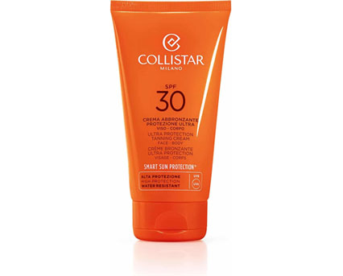
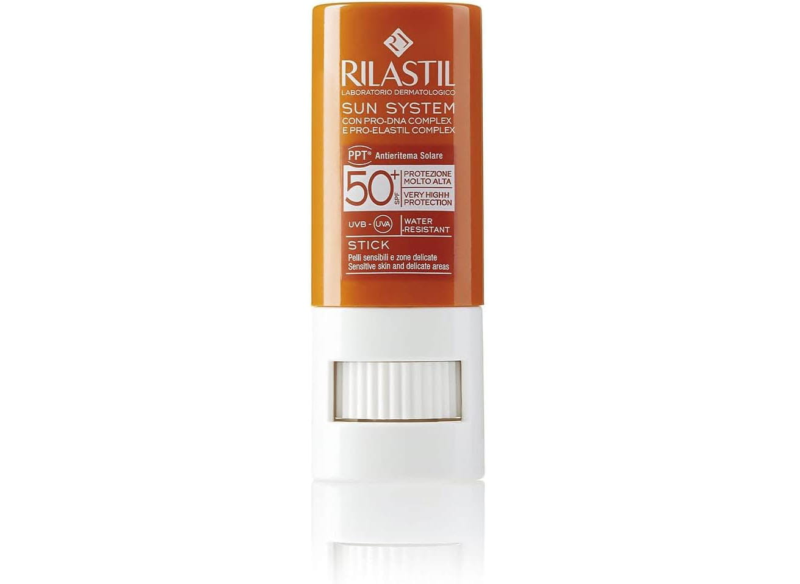
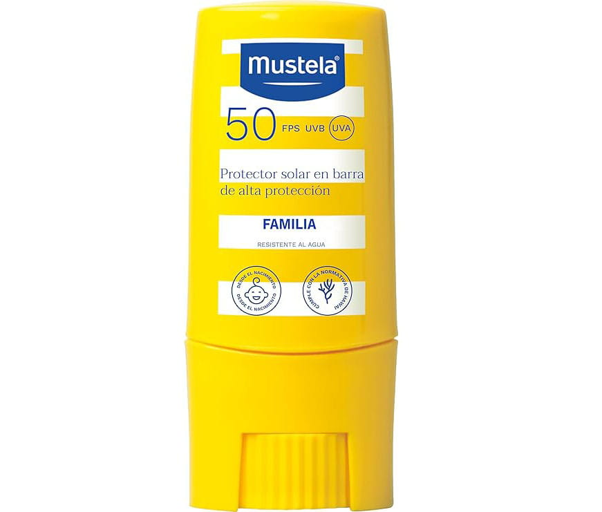
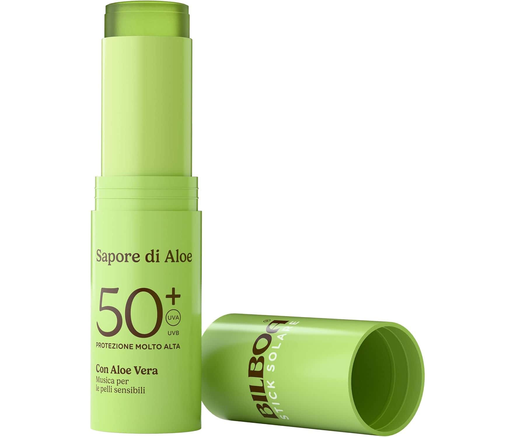
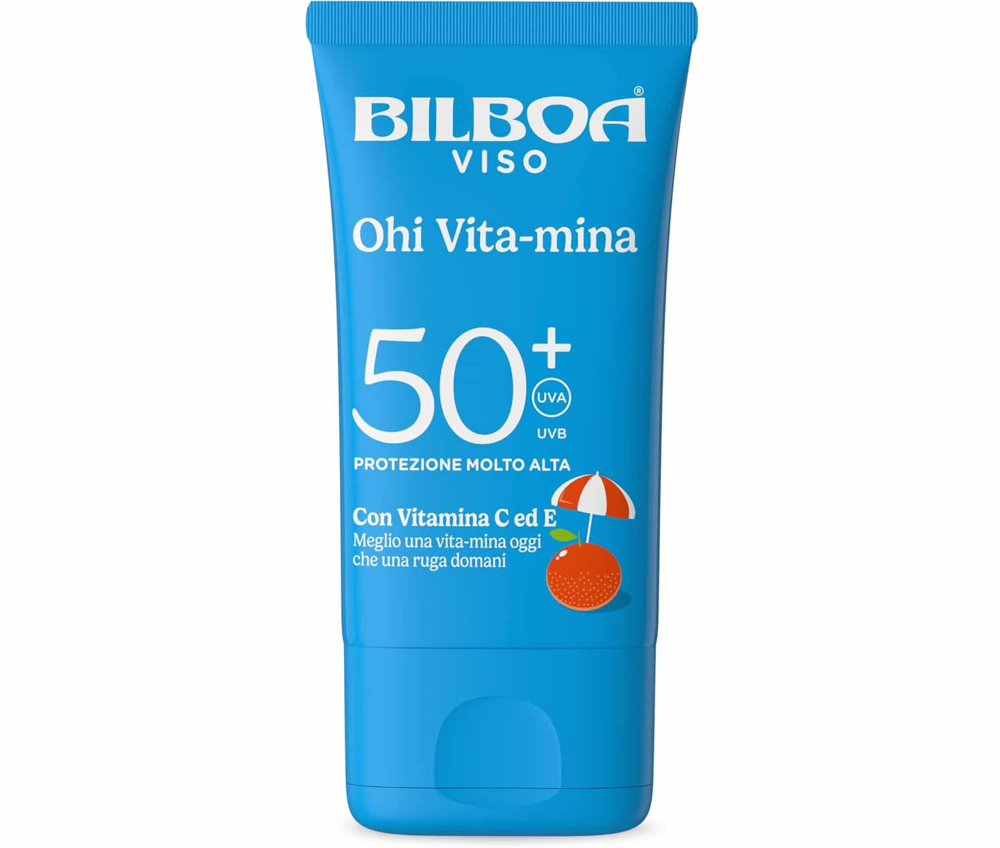
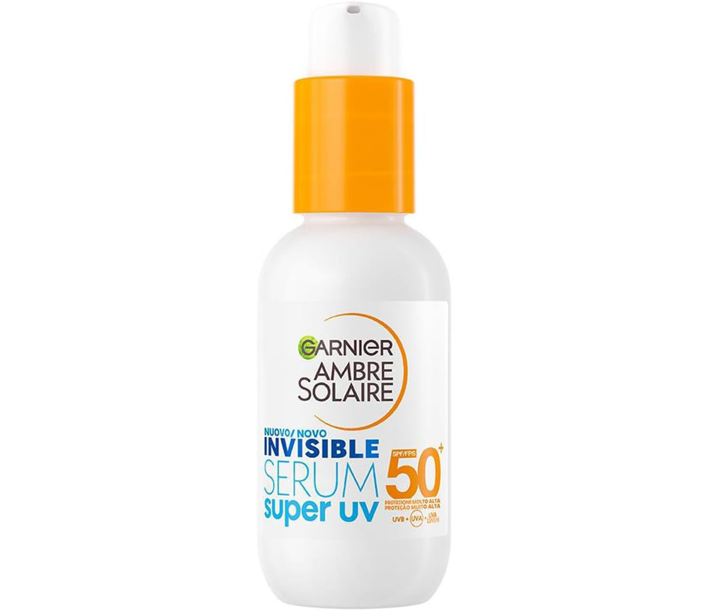
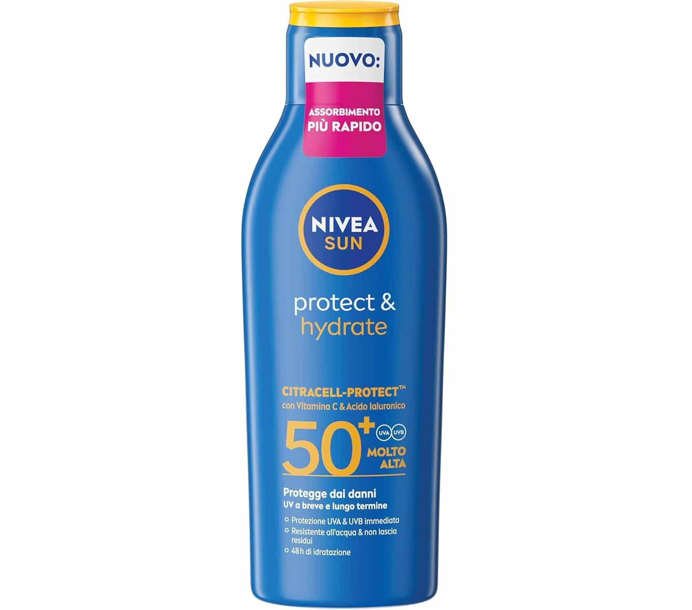

Collistar Crema Abbronzante Protezione Ultra SPF 30
La Crema Abbronzante Protezione Ultra SPF 30 di Collistar è la soluzione ideale per chi non vuole scendere a compromessi tra una protezione elevata e un’abbronzatura intensa. Progettata per resistere anche in condizioni di sole estremo, come nei tropici o in alta montagna, questa crema protegge efficacemente la pelle dai danni dei raggi UV. Il suo vero segreto è il complesso Unipertan®, un esclusivo mix che accelera e intensifica il naturale processo di pigmentazione, permettendo di ottenere un colorito dorato e luminoso anche a chi solitamente ha difficoltà ad abbronzarsi. Oltre alla sua função protettiva, il prodotto agisce come un vero trattamento di bellezza per il corpo. La formula è arricchita con vitamina E, burro di karité e olio di mandorle dolci, ingredienti scelti per le loro spiccate proprietà nutrienti, idratanti e anti-age. La texture ricca ma di facile assorbimento previene la disidratazione causata da salsedine e vento, lasciando la pelle morbida e levigata. Scegliere questa crema significa affidarsi all'eccellenza italiana di Collistar per un'abbronzatura sicura, uniforme e duratura, mantenendo la pelle giovane e protetta durante ogni esposizione.
Vedi su Amazon
Rilastil Sun System Stick Solare Trasparente SPF 50+
Lo Stick Solare Rilastil Sun System SPF 50+ è il compagno indispensabile per chi necessita di una protezione mirata e invisibile sulle zone più fragili del corpo e del viso. Grazie alla sua formula trasparente, è perfetto per proteggere zone localizzate sensibili come nei, cicatrici, labbra, naso e contorno occhi, senza lasciare antiestetici residui bianchi. La sua altissima protezione UVB-UVA è potenziata dall'esclusivo Pro-Dna Complex, che svolge un'azione antiossidante per contrastare i danni cellulari causati dal sole, e dal Pro-Elastil Complex, fondamentale per mantenere l'elasticità cutanea e prevenire il fotoinvecchiamento. Studiato specificamente per le pelli sensibili e reattive, questo stick è rigorosamente privo di profumo e parabeni, riducendo al minimo il rischio di allergie. La sua texture ultra-scorrevole e il formato compatto da 8,5 ml lo rendono estremamente pratico da portare sempre con sé, ideale per lo sport all'aria aperta o per ritocchi veloci durante la giornata. Essendo estremamente resistente all'acqua, garantisce una tenuta impeccabile anche durante il nuoto o in caso di sudore intenso. Scegliere Rilastil significa affidarsi a una sicurezza dermatologica superiore per proteggere i dettagli più delicati della propria pelle in ogni condizione di esposizione.
Vedi su Amazon
Mustela Solaire Stick SPF 50+: Protezione mirata per neonati e bambini
Il Mustela Solaire Stick SPF 50+ è la soluzione pratica e sicura progettata specificamente per la pelle estremamente delicata di neonati e bambini, fin dalla nascita. Grazie al suo formato stick da 9 ml, permette un'applicazione precisa e veloce su zone localizzate come zigomi, nei, orecchie e labbra, che spesso richiedono una protezione extra durante l'esposizione solare. La sua formula ad altissima protezione garantisce uno scudo efficace contro i raggi UVA e UVB, mantenendo al contempo le difese naturali della pelle grazie al principio attivo brevettato Perseose d’Avocado®, che protegge la barriera cutanea e preserva il capitale cellulare. La texture è pensata per essere invisibile e non unta, facilitando l'applicazione senza lasciare residui appiccicosi sulla pelle dei più piccoli. Essendo rigorosamente senza profumo e dermatologicamente testata, questa protezione solare è ideale anche per le pelli più sensibili o tendenti all'atopia. La sua resistenza all'acqua e al sudore assicura una tenuta prolungata durante i giochi in spiaggia o all'aperto. Compatto e tascabile, lo stick Mustela è il mai-più-senza da tenere in borsa per proteggere i dettagli più fragili del viso e del corpo in ogni momento della giornata, garantendo sicurezza e comfort ai massimi livelli.
Vedi su Amazon
Bilboa Sapore di Aloe: Stick Solare SPF 50+ per zone sensibili
Lo Stick Solare Bilboa Sapore di Aloe SPF 50+ è la soluzione pratica e tascabile pensata per chi cerca una protezione specifica per le parti più vulnerabili del viso e del corpo. Grazie al suo formato da 20 ml, è l'alleato perfetto per schermare labbra, naso, tatuaggi, nei e cicatrici, garantendo una difesa mirata dove la pelle è più sottile o esposta. La formula è arricchita con Aloe Vera, nota per le sue proprietà rinfrescanti e lenitive, che offre un sollievo immediato e un comfort duraturo anche sotto il sole più intenso, lasciando sulla pelle una delicata e piacevole fragranza naturale. La sicurezza è garantita da filtri fotostabili UVA/UVB di ultima generazione, che proteggono efficacemente contro scottature e danni solari a lungo termine. Uno dei punti di forza di questo stick è la sua texture leggera e invisibile: si assorbe rapidamente senza ungere, rendendolo adatto non solo per la spiaggia, ma anche per l’uso quotidiano in città. Essendo resistente all'acqua, mantiene la sua efficacia anche durante il nuoto o l'attività sportiva. È un prodotto versatile, ideale per tutta la famiglia, che combina la praticità del formato viaggio con l'alta qualità di una protezione solare che lascia la pelle vellutata e luminosa.
Vedi su Amazon
Bilboa Ohi Vita-mina: Protezione Viso SPF 50+ con Vitamina C ed E
La Bilboa Ohi Vita-mina Crema Solare Viso SPF 50+ è molto più di una semplice protezione solare: è un vero trattamento quotidiano studiato per preservare la bellezza e la giovinezza del volto. Grazie alla sua formula avanzata arricchita con Vitamina C, Vitamina E e Niacinamide, questa crema svolge una potente azione antiossidante che contrasta lo stress ossidativo e previene attivamente i segni del foto-invecchiamento, come rughe e macchie scure. I filtri fotostabili UVA/UVB di ultima generazione assicurano una difesa totale anche nelle zone più vulnerabili come naso, labbra, nei e tatuaggi, mantenendo la pelle elastica e compatta sotto il sole. La texture leggera e invisibile è uno dei suoi maggiori punti di forza: si assorbe istantaneamente senza ungere, lasciando il viso vellutato e naturalmente luminoso, caratteristica che la rende ideale per l'uso quotidiano sia in vacanza che in città come base per il trucco. Il pratico formato viaggio da 40 ml è perfetto da tenere in borsa o nello zaino per applicazioni rapide durante la giornata, garantendo freschezza e protezione costante. Resistente all'acqua e dalla profumazione delicata, la crema Ohi Vita-mina è la scelta vincente for chi desidera una pelle protetta, uniforme e visibilmente sana in ogni occasione.
Vedi su Amazon
Garnier Ambre Solaire Super UV: Il Siero Protettivo Invisibile con Ceramidi
Il Siero Viso Protettivo Invisibile Super UV di Garnier rappresenta l'ultima frontiera della fotoprotezione quotidiana urbana. Grazie alla sua texture fluida ultra-leggera, questo siero diventa immediatamente invisibile sulla pelle dopo l'applicazione, rendendolo la base perfetta per il make-up o un alleato ideale per chi ha la barba, poiché non lascia residui bianchi o sensazione di unto. Progettato per un uso frequente, offre uno scudo ad ampio spettro contro i raggi UVB, UVA e UVA lunghi, proteggendo al contempo il viso dall'inquinamento e dalle aggressioni esterne tipiche della vita in città. La vera innovazione di questo siero risiede nella formula arricchita con Ceramide Protect, che non si limita a schermare il sole ma lavora attivamente per rafforzare la barriera cutanea, mantenendo l'idratazione e la salute della pelle. Adatto a tutti i tipi di pelle, comprese le più sensibili, il siero Super UV garantisce una protezione SPF 50+ ad assorbimento rapido che non appesantisce i pori. Il flacone compatto da 30 ml è perfetto per un'applicazione precisa e costante, assicurando una pelle protetta, forte e levigata in ogni momento della giornata.
Vedi su Amazon
NIVEA SUN Protect & Hydrate SPF 50+: Idratazione 48h e Protezione Cellulare
La NIVEA SUN Protect & Hydrate SPF 50+ è la soluzione completa per chi desidera una pelle protetta e profondamente idratata durante l'esposizione solare. Grazie al suo avanzato sistema di filtri UVA/UVB, questa crema solare offre una doppia azione protettiva: all'esterno scherma immediatamente dai danni UV a breve e lungo termine, come scottature e invecchiamento precoce, mentre all'interno sfrutta l'innovativa tecnologia CITRACELL-PROTECT. Arricchita con Vitamina C e Acido Ialuronico, la formula riduce i danni a livello cellulare e garantisce alla pelle ben 48 ore di idratazione intensa, mantenendola morbida e sana. La texture è stata recentemente migliorata per assicurare un assorbimento ultra-rapido: la crema è facile da spalmare, non unge e non lascia residui bianchi, permettendoti di rivestirti subito dopo l'applicazione. Essendo un prodotto Waterproof, garantisce una protezione affidabile anche durante i bagni prolungati o l'attività sportiva. Inoltre, NIVEA dimostra il suo impegno per l'ambiente con una formula dermatologicamente comprovata e priva di microplastiche. Con il suo generoso formato da 200 ml, è il prodotto indispensabile per tutta la famiglia, coniugando l'efficacia di un solare ad alta protezione con il comfort di un treatment corpo rigenerante.
Vedi su Amazon